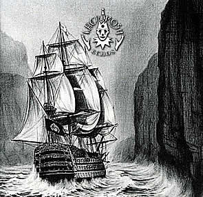
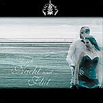
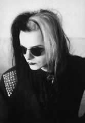

Entrevista
de Tilo Wolff à Lu Wolff - Lacrimosa Brasil Fan Club
- Janeiro de 2003
Eu soube que
o novo álbum, Echos, foi inspirado na trágica
inundação que aconteceu na Europa Central em Agosto
do ano passado. Isso é verdade?
Não. Não é verdade.
O álbum já estava totalmente composto e nós
estávamos no meio do processo de produção
quando a inundação aconteceu. E, na realidade,
eu nunca escreveria nenhum tipo de música com letras
falando da tragédia que aconteceu com o povo.
Quanto tempo
você levou com a gravação do Echos?
Gastamos apenas cinco meses.
Olhando para
os títulos das músicas, Echos parece seguir o
mesmo modelo do Fassade e do Elodia, com um
tema central dividido em capítulos. Esse álbum
também conta uma história? Do que ela se trata?
De
certa forma ele conta uma história. Mas na verdade não
foi planejado dessa forma. Quando estávamos nessa longa
turnê. Bem, eu vou ter que começar diferente...
O fato é que eu componho constantemente.
Eu nunca me sento e penso: "Bem, agora eu vou começar
a escrever". Existe todo um processo em andamento
e durante a longa turnê do Fassade, não tive a
possibilidade de compor. Quando nós voltamos, havia tantas
emoções e sentimentos próximos de vir à
tona. O processo de escrever o álbum foi muito curto
e compacto, que aconteceu, eu não sei, acho que em quatro
meses ou coisa assim. Eu escrevi o álbum todo e não
tinha pensado nele como um todo no começo, eu só
percebi um dia, que nós tínhamos que ir para o
estúdio para poder gravar o álbum no sentido mais
puro.
Estava tudo fresco e as emoções
estavam ainda conosco e, no estúdio eu percebi que as
músicas estavam ligadas entre si, porque todas foram
escritas num único período de tempo, de um mesmo
sentido, um mesmo sentimento. Portanto, elas estavam ligadas
umas às outras.
E estavam ligadas entre si nesse sentido,
contando uma espécie de história de uma busca.
É como quando começa a considerar que nós
somos um produto da cultura na qual nascemos, e que nós
somos também produtos das coisas que aparecem em nossas
vidas. Elas são ecos do passado que nos fizeram ser o
que somos agora, e o que somos agora, hoje, no presente, é
novamente responsável por como nossa vida futura será.
Que tipo de decisões tomaremos, como lidaremos com nossa
vida futura, em tudo o que ela está baseada e em tudo
o que aprendemos até agora. Os ecos do passado nos trazem
ao presente, vivendo nos moldes atuais e novamente influenciam
nossa vida futura. Esse é basicamente o tema desse álbum.
Nós
já sabemos que vocês não vão sair
em turnê esse ano, certo?
Infelizmente é verdade.
Você
poderia me dizer o por quê? Existe uma razão específica?
Sim, claro! Porque nós temos estado
constantemente compondo ou produzindo no estúdio, ou
tocando ao vivo no palco. Desde o começo do ano que terminou
agora, sem nenhum intervalo. Anne Nurmi e eu precisamos de um
descanso, depois da longa turmê do Fassade. Mas como eu
disse antes, quando voltamos eu não pude ter esse descanso,
tinha muito que fazer, tinha que escrever as letras e as músicas
e então o novo álbum chegou. Agora, finalmente
poderemos fazer uma pequena pausa (risos).
O que vocês
planejam fazer durante esse ano? Vocês estão pensando
em produzir um novo vídeo-clipe?
Nós temos filmado um vídeo-clipe
para o single Durch Nacht und Flut e talvez nós
lancemos num futuro próximo, uma espécie de "video-collection"
porque temos feito, como você deve saber, vídeos
dos álbuns anteriores, mas não lançamos
vídeos dos últimos álbuns. Portanto, vamos
fazer uma espécie de coleção em vídeo
e DVD para um futuro próximo.
Eu notei que
existe uma pequena influência de música eletrônica
no seu trabalho atualmente. Você gosta de música
eletrônica? Existe alguma influência de música
eletrônica nesse último álbum?
Antes de qualquer coisa eu devo dizer que
eu gosto de música eletrônica no sentido em que
ela era feita nos anos 80. Claro, bandas como Depeche Mode e
todas as "New Romantics", eu também gosto muito
da produção EBM. Mas não gosto muito da
nova música eletrônica do tipo Techno.
Vocês
estão usando um pouco de cores nas capas de seus álbuns
agora. Por que vocês decidiram fazer isso?
Nós
sempre tivemos duas linhas de capas. Existem as capas dos álbuns
que são pinturas em preto e branco e existem as capas
dos singles que também eram, até agora, preto
e branco, por outro lado, apresentando algumas vezes, fotos
coloridas ou coisas assim. Dessa vez nós fizemos essa
seção de fotos para o single Durch Nacht und
Flut, que significa Através da Noite e Inundação.
Fizemos à beira-mar, e existe uma tomada da chegada da
noite. Nós começamos a fazer essa seção
de fotos lá na praia e aos poucos a inundação
veio e pegamos essas fotos para o single. Então elas
serviram perfeitamente. Essas fotos para a música, porque
a foto colorida capturou.
Ela deu a impressão da música,
seu poder, suas emoções profundas nas quais a
música é baseada. Mas essa foto é sem movimento
nenhum, mas as cores imprimem esse tipo de poder, um reflexo
diferente de toda a situação. Então essa
foi a razão pela qual decidimos realizá-la colorida.
Olhando para
o nome e letra de algumas músicas como Réquiem,
Der Ketzer, Crucifixo, Sanctus e
a novíssima Kyrie, a gente pode notar uma espécie
de conexão com idéias religiosas. Por que isso
é tão freqüente? Você é religioso?
Eu sou uma pessoa bastante religiosa. Eu
fui inspirado, influenciado pela música religiosa. Eu
mesmo cantei num coral numa igreja. Claro, significa muito para
mim, influenciou minha vida toda e, desde que o Lacrimosa é
tão ligado à minha vida pessoal, claro que são
também sentimentos como esse em que são baseados
minhas crenças religiosas e que estão também
em minhas letras e músicas.
Você
sabe alguma coisa sobre o Brasil?
Pra falar a verdade, eu sei um pouco. Eu
sei que as pessoas têm um coração caloroso!
Bem, ao menos eu acredito que tenham um coração
caloroso! (risadas).
Elas têm
mesmo! E você provavelmente terá pessoas gritando
o tempo todo durante seu show aqui no Brasil!
Isso soa muito bem! (risadas).
A
Nuclear Blast está tomando conta de seus álbuns
aqui no Brasil agora, certo? Você acha que isso vai ser
melhor para promover seus álbuns por aqui?
A razão principal é que,
Anne Nurmi e eu tivemos que escolher se queríamos continuar
com a Hall of Sermon da maneira como fizemos o ano passado,
lançando outras bandas, ou nos concentrarmos mais em
nossa música. E nós decidimos que o Lacrimosa
é mais importante do que o selo Hall of Sermon. Nós
decidimos nos concentrar mais no Lacrimosa novamente, então,
nós também decidimos licenciar o álbum
novo do Lacrimosa à Nuclear Blast em certos países,
então eles fazem o marketing e a distribuição
do álbum e nós podemos nos concentrar mais na
música e também nos concentrar no mercado em que
trabalhamos com a Hall of Sermon porque em muitos países
ainda existem lançamentos com esse selo. Existe muita
coisa a se fazer e nós queremos fazê-las 100%.
Nós não podemos tomar conta de todo esse trabalho
sozinhos.
Quando vocês
planejam começar a turnê do Echos? Ano que vem?
Por enquanto nós não podemos
planejar nada. Eu não sei se nós sairemos em turnê
no ano que vem. Eu adoraria, porque às vezes sinto falta
de ir para o palco. Mas por enquanto não existem planos
definidos.
Falando das
Américas, nós sabemos que vocês têm
uma enorme audiência no México. Você tem
idéia de quantos fãs vocês têm no
Brasil?
Pra falar a verdade, eu não tenho
idéia (risadas).
Bem, eu estou
encarregada de tornar esse número bem grande! (risadas)
Você gostaria de dizer alguma coisa para os fãs
brasileiros?
Eu quero dizer algo pessoalmente para você,
porque quero agradecer muito, e isso inclui a opinião
da Anne também! Nós dois queremos agradecer pelo
esforço que você faz pelo Lacrimosa. Seu excelente
trabalho, o apoio que você nos dá, isso é
realmente inacreditável!
Eu sou profundamente
grata pela oportunidade que você está nos dando
de obter todas essas informações, e os fãs
brasileiros ficarão malucos com elas! É um grande
prazer trabalhar pelo Lacrimosa! A Anne não está
aí hoje, está?
Não no momento. Ela não pode
dar nenhuma entrevista hoje.
Sem problemas.
Mande um grande abraço a ela!
Claro que mando!
Eu quero agradecer
mais uma vez por essa oportunidade que você deu ao Lacrimosa
Brasil Fan Club. E vocês podem contar comigo para qualquer
coisa que precisarem para ajudá-los aqui no Brasil.
Muito gentil da sua parte! Muito obrigado.
Um grande
abraço a você e a toda equipe da Hall of Sermon!
Muito, muito obrigado. Tenha um bom dia!
Até mais!
Extraída
de www.lacrimosa.brasil.nom.br